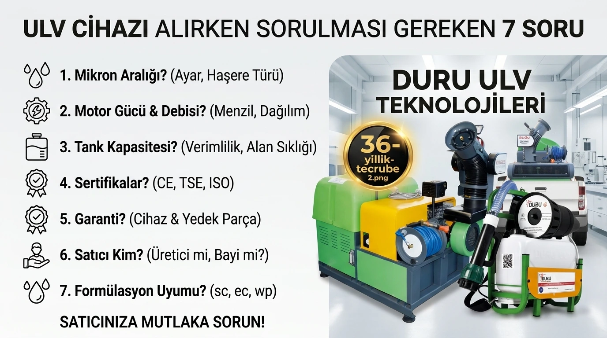

Doğru Soruları Sormak, Doğru Cihazı Seçmenin İlk Adımıdır
ULV cihazı alırken nelere dikkat edilmeli sorusu, sadece fiyata bakarak karar vermenin ötesinde, teknik ve uzun vadeli faktörleri değerlendirmeyi gerektirir. Bir üretici firma olarak, müşterilerimize ve potansiyel alıcılara satıcılarına sormalarını önerdiğimiz 7 kritik soruyu paylaşıyoruz.
1. "Bu Cihaz Hangi Mikron Aralığında Çalışıyor?"
Damlacık çapı ayarlanabilir mi, yoksa sabit mi? Hedef haşerenize (sivrisinek, karasinek, sera zararlısı) uygun mikron aralığı sunuyor mu? Bu, uygulamanın etkinliğini doğrudan belirleyen en kritik teknik özelliktir.

2. "Motor Gücü ve Hava Debisi Ne Kadar?"
Yüksek motor gücü, daha uzun menzil ve daha homojen dağılım anlamına gelir. Ancak güç, kullanım amacınızla (küçük ofis mi, geniş belediye güzergahı mı) orantılı olmalıdır — gereğinden fazla güç gereksiz maliyet, yetersiz güç ise etkisiz uygulama anlamına gelir.
3. "Tank Kapasitesi İhtiyacıma Uygun mu?"
Sık dolum yapmak operasyonel verimliliği düşürür. Taranacak alanın büyüklüğüne göre yeterli tank kapasitesine sahip bir model seçilmelidir.
4. "Cihaz Hangi Sertifikalara Sahip?"
CE, TSE gibi uluslararası standartlara uygunluk, hem güvenlik hem de (özellikle kamu ihalelerinde) yasal zorunluluk açısından önemlidir. ISO 9001, ISO 14001 gibi sertifikalar da üreticinin kalite ve çevre yönetim sistemlerinin güvencesidir.
5. "Yedek Parça ve Teknik Destek Garantisi Ne Kadar Sürüyor?"
Sadece fiyata değil, sonrasında ne kadar destek alacağınıza da bakın. Kısa garanti süreleri, uzun vadede daha yüksek bakım maliyetleri anlamına gelebilir. Duru ürünleri 2 yıl cihaz garantisi ve 10 yıl yedek parça garantisi sunar.
6. "Satıcı Üretici mi, Bayi mi?"
Doğrudan üreticiyle çalışmak, daha hızlı teknik destek ve daha şeffaf bir tedarik süreci anlamına gelir. Bayiler genellikle üretici ile son kullanıcı arasında ek bir iletişim katmanı oluşturur.
7. "Cihaz Hangi İlaç Formülasyonlarıyla Uyumlu?"
sc (süspansiyon konsantre), ec (emülsiyon konsantre), wp (ıslanabilir toz) gibi farklı formülasyon tipleriyle uyumlu olması, gelecekte farklı ilaçlara geçiş yapmanız gerektiğinde esneklik sağlar.
Sonuç: Sadece Fiyata Değil, Toplam Değere Bakın
ULV cihazı seçerken en ucuz seçeneği değil, en yüksek toplam değeri (teknik uygunluk + garanti + teknik destek + sertifikasyon) sunan modeli tercih etmek, uzun vadede hem maliyet hem de operasyonel verimlilik açısından daha avantajlıdır.